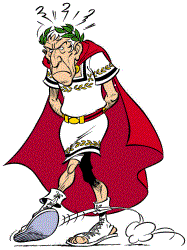

Licenca
To delo je na voljo pod pogoji slovenske licence Creative Commons 2.5:
priznanje avtorstva - nekomercialno - deljenje pod enakimi pogoji.
Celotna licenca je na voljo na spletu na naslovu http://creativecommons.org/licenses/by-nc-sa/2.5/si/. V skladu s to licenco je dovoljeno vsakemu uporabniku delo razmnoževati, distribuirati, javno priobčevati, dajati v najem in tudi predelovati, vendar samo v nekomercialne namene in ob pogoju, da navede avtorja oziroma avtorje in izdajatelja tega dela. Če uporabnik delo predela, kar pomeni, da ga spremeni, preoblikuje, prevede ali uporabi to delo v svojem delu, lahko predelavo dela ponudi na voljo le pod pogoji, ki so enaki pogojem iz te licence oziroma pod enako licenco.

Varnost - zaupnost in zanesljivost
Ko uporabniki uporabljamo računalniška omrežja, od komunikacije preko omrežja pričakujemo določene lastnosti. Ko govorimo o računalniški varnosti, ponavadi mislimo na dve lastnosti:
- Zaupnost: pomeni, da sporočil ali podatkov ne more prebrati kdorkoli, ampak le tisti, katerim so namenjeni.
- Zanesljivost: pomeni, da sistem ali aplikacijo lahko uporabljamo, kadarkoli jo potrebujemo (torej da sistem deluje, da aplikacija sprejema naše zahteve in odgovarja nanje v pričakovanem odzivnem času).
Zaupnost (ang. confidentiality) sporočila je zagotovljena takrat, ko samo pošiljatelj in prejemnik lahko prebereta vsebino sporočila. Do sedaj smo že spoznali, da se to običajno izvaja s šifriranjem (kriptiranjem) in dešifriranjem (dekriptiranjem) sporočil.

Šifriranje s Cezarjevo abecedo je eden prvih znanih mehanizmov šifriranja, saj naj bi ga prvi uporabljal Julij Cezar, ki mu ni bilo všeč, da so sovražniki prestrezali njegove sle z vojaškimi sporočili. Cezarjeva abeceda rečemo navadni abecedi, ki je zamaknjena za določeno število mest. Temu številu rečemo ključ. V spodnji tabeli vidiš abecedo s ključem 3.
V nalogi na desni se bo, ob kliku na gumb Šifriraj, besedilo zašifriralo (vsi A-ji se bodo zamenjali z X-i, B-ji z Y-i in tako dalje, presledki in ločila bodo ostali nespremenjeni - kot Rimljani, bomo tudi mi uporabljali le črke angleške abecede).
| A | B | C | D | E | F | G | H | I | J | K | L | M | N | O | P | Q | R | S | T | U | V | W | X | Y | Z |
| X | Y | Z | A | B | C | D | E | F | G | H | I | J | K | L | M | N | O | P | Q | R | S | T | U | V | W |
Vaja
Vpiši šifrirano sporočilo v polje Sporočilo. Kaj moraš vzeti za ključ, da se bo šifrirano besedilo pravilno dešifriralo? Ali znaš besedilo šifrirati in dešifrirati tudi brez računalnika, samo s pomočjo tabele?
V postopku avtentikacije (ang. authentication - overjanje) se prejemnik in pošiljatelj prepričata o medsebojni identiteti oziroma en drugemu ne samo izjavita, ampak tudi dokažeta, kdo sta. Najpreprostejša metoda avtentikacije je geslo, vendar pa je tudi najšibkejša. Če imaš šibko geslo, ga na primer lahko napadalec kar ugane (tvoje ime ali priimek, rojstni datum, ime tvoje mačke ali papagaja, ime tvojega najljubšega nogometnega kluba ali kaka druga beseda, ki se jo lahko najde v slovarju...)
Storitve, ki so dostopne preko omrežja, zaščitimo z nadzorom dostopa (ang. access control) – to je skupek pravil in mehanizmov za uveljavljanje teh pravil. Pravila opredeljujejo, kateri tip uporabnikov ali kateri konkretni uporabniki lahko dostopajo do katerih podatkov ter kaj lahko z njimi počnejo. Seveda predpostavljamo, da se uporabnik najprej avtenticira, torej dokaže svojo identiteto.Primer: vsi starši dijakov lahko uporabljajo spletno redovalnico. Gospa Novakova lahko pregleduje le ocene svoje hčerke Anje, ne pa tudi ocen Anjine najboljše prijateljice. Nobenih ocen pa ne more vnašati ali spreminjati. Učiteljica ga. Bele lahko pregleduje in vnaša ocene za slovenščino, ampak le za dijake 3. c in 2. d razreda. Ocen drugih predmetov in drugih razredov pa ne more niti pregledovati.